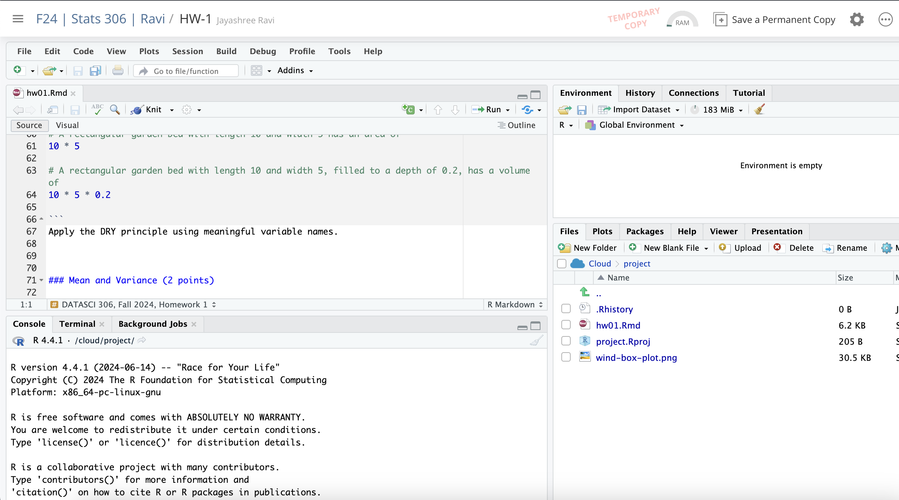

DATASCI 306: Introduction to Statistical Computing
This course introduces basic concepts in computer programming and statistical computing techniques as they are applied to data extraction and manipulation, statistical processing and visualization. It is aimed primarily at undergraduate majors and minors in Statistics.
Enforced Pre-requisite: [DATASCI 101 or STATS 206 or STATS 250 OR STATS 280 OR STATS 412 or ECON 451 or IOE 265] AND prior or concurrent enrollment in [MATH 116 or MATH 121 or MATH 156 or MATH 176 or MATH 186 or any 200+ level math credit except for MATH 201].
Learning Objectives
By the end of this course, you will
- have a rigorous understanding of the structure of computer programs
including
- variables
- functions
- iteration
- input/output
- have thorough familiarity with the R programming language and RStudio development environment
- be able to load, manipulate, and present data
Grading
Homework (25%). There will be about 8 weekly problem sets. Most weeks, they will be posted on Thursday and due the following Thursday. Late submissions are not accepted, but we will drop your lowest two scores when calculating your homework average. You may discuss the homework with other students or use other resources from the Web, but you must write up your own solutions by understanding every statement that makes up your answer.
Exams:
- Midterm Exam - 1 (25%)
- Midterm Exam - 2 (25%)
Final Group Project (25%)
Working in Groups
You are encouraged to work together on all class material to discuss solutions and debug. However, each student must submit own work. Ask yourself, “Am I avoiding learning something in my actions?” If yes, don’t do it.
Materials
All books are freely available through our library system or online:
- Our main text book is R for Data Science (2ed) by Hadley Wickham, Mine Çetinkaya-Rundel, and Garett Grolemund
- Later in the semester, we will pull additional material from
- For learning git, we will use Beginning Git and GitHub by Mariot Tsitoara.
- For statistical background, we suggest Practical Statistics for Data Scientists
Software
- R: A statistical programming language
- RStudio (Cloud): A development environment for R
- Git: Version control and collaboration for software projects
R, a statistical programming language
R is a statistical programming language:
- Open source - Free
- Specifically designed for statistical computing and visualization
- Being adopted by research, industry, government
- Strong Community and Support
What is Git?
- A version control system manages changes from multiple sources simultaneously.
- A reasonable analogy: Google Docs with track changes turned on
- Useful for groups working together to track changes to the software package and document why changes were made
- We will use it to disseminate labs, and lecture materials.
How does git work?
- Creates a repository (a hidden directory/folder) to
keep information about the history of files using
git initcommand (more on this soon!) - When you make changes, you may add them to a staging area
- When you think you have completed a functionality, you commit your changes to save a snapshot.
- Git stores the differences (“diffs”) from the previous version to your new version.
- You can push your changes to a shared repository
like
githuborbitbucketfor others to use - You can pull from a shared repository and merge the changes of others.
- If there are conflicts, git will let you know and make you resolve them.
- If you ever need to see what changed, you have the entire history of all changes to look at.
To get the latest lecture notes, you have to periodically execute a
git pull to get the updates.
Using our Posit Cloud
In this course, all lectures, homework and labs will be run using Posit Cloud.
Alternative environments include:
- Colab
- RStudio on your local machine. Download RStudio from here:https://posit.co/download/rstudio-desktop/
- From R terminal after you download R:https://cran.rstudio.com/
Some basic POSIX CLI commands
CLI - command line interface is the text based UI (User Interface) to run commands as opposed to using GUI (Graphical User Interface)
In an CLI you have an interactive prompt where you type a command. It might look something like this:
$ command -o --options argument1 argument2$is the promptcommandis what we want to do (e.g.,cd, git etc.)Optional flags have
-or--in front and change behaviorWe can tell what to do with
argument1andargument2. Some commands have no arguments.cd dir_name: Change directory.ls: List files in current directorypwd: Print working directorymkdir dir_name: Make a new directory (folder)rm -r: Recursively delete directories and everything inside (use carefully!). There is no recycle bin that keeps the deleted files when you run this command. All files are permanently gone!
Reference: https://en.wikipedia.org/wiki/List_of_POSIX_commands
Using git with CLI
While git has graphical interfaces, we will also learn
to use CLI for git.
When interacting with git, we will use commands like this:
$ git SUBCOMMAND -o --options ARG1 ARG2 ...Some example sub commands will be pull to get updates,
log to see the history, add to stage files,
and commit to commit changes.
Let git know who you are
$ git config --global user.name "YOUR NAME"
$ git config --global user.email "YOUR EMAIL"Getting a copy of the DATASCI 306 Repository
Materials for this course are hosted at GitHub, a popular website front end for git.
To get a copy of them, clone the repository, say on your local computer, you would run:
$ cd LOCATION_YOU_WANT_TO_STORE_REPO
$ git clone https://github.com/jravi123/datascience306-fall-2025Getting future updates
$ cd PATH/TO/REPO
$ git pullSaving changes to our local repo
$ git status
$ git add FILENAME
$ ... perhaps other files ...
$ git commit -m "a note explaining changes"How to get the repo to Posit?
The Shared Workspace already has the GitHub repo pulled in. This is read-only for you!
However, make sure you make a permanent copy of the project before you start making edits (especially the homework project) as every file you open from the shared workspace will be temporarily saved on your account and will not be available for the next time unless you make a permanent copy of the project in your account by clicking on the relevant button as shown below

To get lecture/lab updates after a copy is made, please run
git pull on your copy.
What’s in our project?
- Data sets we use
- Lab docs
- Lecture docs (like these)
All homework, labs, and lectures are RMarkdown documents.
RMarkdown documents
RMarkdown documents blend code and presentation.
General workflow:
- Open
.Rmdfile - Run code in R chunks
- Edit text and code to answer prompts
- Knit to HTML/PDF files
- (Homework/projects) submit PDF files on Gradescope for homework
What is markdown?
- Markdown files are plain text files that have special tags for interpretation.
- They have a header (denoted by
---) and a body. We can render them to HTML to view in any web browser. - See the “Help -> Markdown Quick Ref” in RStudio for more details.
RMarkdown
- RMarkdown extends basic markdown to allow embedding R code within the document.
- It addition to formatting text, you can include code chunks.
- When you knit the document, first the code is evaluated, then the results are added to the markdown document. Then that is turned into a web page.
- In addition to text and numeric output, plots and graphs are automatically inserted into the output.
- There are options to control how chunks are presented, cache computations to speed up knitting, etc.
Chunks in Rmd files
All chunks have the following form:
```{r name, key = value, ...}
... R code goes here ...
```The
nameis optional but helps when you get an error.The
key = valuecontrols the behavior of the chunk (optional). Example,include = FALSEto hide chunk. Refer:chunk optionsCTRL-ALT-Iinserts a new chunk your RMarkdown document.
Getting started with R programming…
Let us solve some math problems.
- add 2 and 5
- divide 5 by 2
- multiply the resultant with 10
- create a vector of all numbers from 1 to 5, print the vector and find the mean of those numbers
The “Start Over” button will give you a fresh environment.
Expressions and Statements
When a program executes, you typically create temporary variables in the RAM of your computer. The values that these variables keep at any point of time during your R program execution is called its state.
An expression is R code that, when run, provides a value (do not change state):
3 + 4Commands that change the state of the program are called statements, such as assignment:
a <- 3 + 4Note: You can also use = in the above expression like
a = 3 + 4. However, the recommended style from tidyverse
and Hadley(http://adv-r.had.co.nz/Style.html) is <-
for assignments
Next class
More on R fundamentals